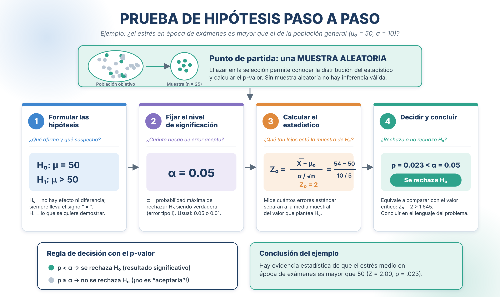
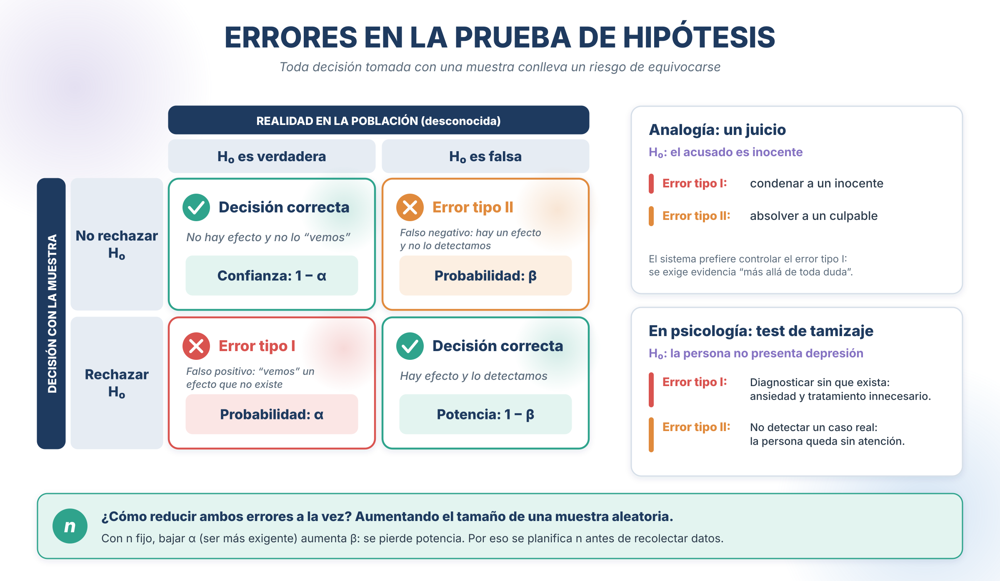
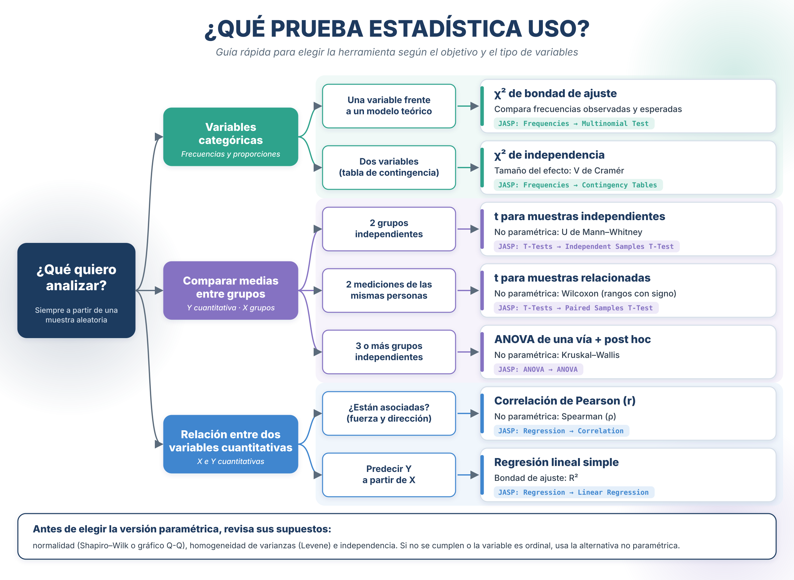

4 Herramientas Estadísticas
En el capítulo anterior vimos cómo estimar un parámetro poblacional a partir de una muestra (estimación puntual e intervalos de confianza). En este capítulo damos el siguiente paso: usar la muestra para tomar decisiones sobre la población mediante pruebas de hipótesis, y luego aplicar esa lógica a las herramientas más usadas en psicología.
4.1 Pruebas de hipótesis
Las pruebas de hipótesis que veremos en este capítulo (χ², z, t, correlación, ANOVA) suponen que los datos provienen de una muestra aleatoria de la población objetivo (o de una asignación aleatoria a grupos, en los experimentos). Esa aleatoriedad es lo que permite conocer la distribución muestral del estadístico de prueba y, por tanto, calcular probabilidades como el p-valor.
Si la muestra es por conveniencia (voluntarios, solo un paralelo, una encuesta difundida por redes sociales), el p-valor sigue apareciendo en la tabla de JASP, pero pierde su respaldo probabilístico: no autoriza a generalizar a la población.
Una prueba de hipótesis es un procedimiento estadístico formal para tomar una decisión sobre un parámetro poblacional (\(\theta\)), contrastando dos afirmaciones opuestas con la evidencia de la muestra. Permite determinar si una conjetura sobre el parámetro está respaldada o no por los datos.
4.1.1 Pasos de la prueba de hipótesis
- Formular las hipótesis (\(H_0\) y \(H_1\)): se establecen la hipótesis nula y su alternativa.
- Establecer el nivel de significación (\(\alpha\)): probabilidad máxima que estamos dispuestos a aceptar de cometer un error de tipo I (generalmente \(\alpha=0.05\) o \(0.01\)).
- Construir el estadístico de prueba: se calcula un valor estandarizado (ej. \(Z\), \(t\)) que mide qué tan lejos está el estimador muestral del valor propuesto en \(H_0\).
- Evaluar y concluir: se compara el estadístico de prueba con los valores críticos (o se usa el p-valor) para decidir si se rechaza o no se rechaza la hipótesis nula.

4.1.2 Formulación de hipótesis
- Hipótesis nula (\(H_0\)): es la afirmación que se somete a prueba; asume que no hay efecto, cambio o diferencia. Siempre incluye un signo de igualdad (ej. \(\mu = 10\)).
- Hipótesis alternativa (\(H_1\) o \(H_a\)): es la afirmación contraria a la nula; es lo que se sospecha o se quiere demostrar.
- Prueba bilateral: \(H_1: \mu \ne 10\)
- Prueba unilateral a la derecha: \(H_1: \mu > 10\)
- Prueba unilateral a la izquierda: \(H_1: \mu < 10\)
4.1.3 Errores en la prueba de hipótesis
| Tipo de error | Definición | Consecuencia (riesgo controlado) |
|---|---|---|
| Error de tipo I (\(\alpha\)) | Rechazar \(H_0\) cuando en realidad es verdadera. | Falso positivo. Se controla con el nivel de significación (\(\alpha\)). |
| Error de tipo II (\(\beta\)) | No rechazar \(H_0\) cuando en realidad es falsa. | Falso negativo. Se relaciona con la potencia de la prueba (\(1-\beta\)). |

Un tribunal juzga a un acusado bajo el principio de “inocente hasta que se demuestre lo contrario”.
- Planteen \(H_0\) y \(H_1\) para este “juicio”.
- ¿Qué sería un error de tipo I? ¿Y un error de tipo II?
- Ahora trasladen la analogía a la psicología: un test de tamizaje para detectar depresión. Planteen las hipótesis y discutan cuál de los dos errores sería más grave para el paciente.
4.1.4 El p-valor
El p-valor es una medida que permite evaluar la evidencia en contra de la hipótesis nula. Representa la probabilidad de obtener un resultado tan extremo (o más) que el observado, asumiendo que la hipótesis nula es verdadera. Un p-valor pequeño indica que los datos son poco compatibles con \(H_0\) y sugiere evidencia a favor de la alternativa.
- Si \(p < \alpha\): se rechaza \(H_0\).
- Si \(p \ge \alpha\): no se rechaza \(H_0\).
El p-valor no es la probabilidad de que \(H_0\) sea verdadera, ni mide la importancia práctica de un efecto. Por eso siempre debe acompañarse de un tamaño del efecto (Cohen 1994).
En todas las tablas de JASP el p-valor aparece en la columna p. JASP hace por nosotros el paso 3 (calcular el estadístico) y nos entrega el p-valor; nuestro trabajo es formular bien las hipótesis, elegir la prueba adecuada e interpretar el resultado.
4.1.5 Prueba de hipótesis para la media (\(\mu\))
Se utiliza para probar si la media poblacional (\(\mu\)) es igual a un valor de referencia (\(\mu_0\)). El estadístico de prueba mide la distancia entre la media muestral (\(\bar{X}\)) y \(\mu_0\) en unidades de error estándar.
Estadístico de prueba (para la media con \(\sigma\) conocida):
\[ Z_{0} = \frac{\bar{X} - \mu_0}{\sigma / \sqrt{n}} \]
\[ H_0: \mu = \mu_0 \qquad H_1: \mu \neq \mu_0 \]
Se rechaza \(H_0\) cuando:
\[ Z_0 > Z_{\alpha/2} \quad \text{o} \quad Z_0 < -Z_{\alpha/2} \]
Valores usuales de \(Z_{\alpha/2}\):
- al 10% de significación: \(Z_{\alpha/2}=1.645\)
- al 5% de significación: \(Z_{\alpha/2}=1.96\)
- al 1% de significación: \(Z_{\alpha/2}=2.576\)
\[ H_0: \mu = \mu_0 \qquad H_1: \mu > \mu_0 \]
Se rechaza \(H_0\) si \(Z_0 > Z_{\alpha}\).
\[ H_0: \mu = \mu_0 \qquad H_1: \mu < \mu_0 \]
Se rechaza \(H_0\) si \(Z_0 < -Z_{\alpha}\).
- \(Z_{0.10}=1.28\)
- \(Z_{0.05}=1.645\)
- \(Z_{0.01}=2.33\)
Ejemplo: se sabe que en la población general el puntaje medio de una escala de estrés es \(\mu_0 = 50\) con \(\sigma = 10\). En una muestra de \(n=25\) estudiantes en época de exámenes se obtiene \(\bar{X} = 54\). ¿Hay evidencia de que el estrés sea mayor en época de exámenes (\(\alpha = 0.05\))?
\[ Z_0 = \frac{54 - 50}{10/\sqrt{25}} = \frac{4}{2} = 2 \]
Como \(Z_0 = 2 > Z_{0.05} = 1.645\), se rechaza \(H_0\): hay evidencia de que el estrés medio en época de exámenes es mayor que 50.
4.1.6 Tamaño de muestra para pruebas de hipótesis (potencia)
Para las pruebas de hipótesis, el tamaño de muestra se calcula para asegurar una potencia adecuada (\(1-\beta\), usualmente 0.80), es decir, para controlar el error de tipo II (\(\beta\)). Este cálculo debe considerar la magnitud del efecto que se quiere detectar (Cohen 1988).
4.1.6.1 Cálculo básico para la media (potencia)
Se busca detectar una diferencia mínima esperada (\(\mu_1 - \mu_0\), la magnitud del efecto) con una potencia (\(1-\beta\)) y un nivel de significación \(\alpha\):
\[ n = \frac{(Z_{\alpha/2} + Z_{\beta})^2 \cdot \sigma^2}{(\mu_1 - \mu_0)^2} \]
Donde:
- \(Z_{\alpha/2}\): valor Z asociado al nivel de significación (\(\alpha\)).
- \(Z_{\beta}\): valor Z asociado a la probabilidad del error de tipo II (\(\beta\)); para una potencia de 0.80, \(Z_{\beta} = 0.84\).
- \((\mu_1 - \mu_0)\): magnitud mínima del efecto (diferencia clínicamente relevante) que se espera detectar.
Un equipo quiere probar si un programa de mindfulness reduce el estrés en 5 puntos respecto al promedio poblacional (\(\mu_0 = 50\), \(\sigma = 10\)).
- Con \(\alpha = 0.05\) (bilateral) y una potencia de 0.80 (\(Z_\beta = 0.84\)), calculen el tamaño de muestra necesario.
- ¿Qué pasa con \(n\) si quieren detectar una diferencia más pequeña, de 2.5 puntos?
- Discutan: si solo consiguen 15 voluntarios de un mismo paralelo, ¿qué problemas tendrá el estudio además del tamaño?
Las versiones recientes de JASP incluyen el módulo Power (actívalo con el ícono +). Permite calcular el tamaño de muestra necesario para una prueba t indicando el tamaño del efecto esperado (d de Cohen), el nivel \(\alpha\) y la potencia deseada, y muestra curvas de potencia para distintos tamaños de muestra.
4.2 ¿Qué prueba estadística uso?
La elección de la herramienta depende del objetivo del análisis y del tipo de variables involucradas. El siguiente esquema resume las pruebas que veremos en el resto del capítulo, con su alternativa no paramétrica y la ruta en JASP.

4.3 Análisis de datos categóricos: prueba \(\chi^2\)
Cuando las variables son categóricas (nominales u ordinales), la información se resume en términos de frecuencias. La prueba chi-cuadrado (\(\chi^2\)) permite evaluar si las frecuencias observadas difieren de las que esperaríamos bajo una hipótesis teórica. Es una de las herramientas más utilizadas en psicología para analizar respuestas en categorías o preferencias (Navarro et al. 2025).
4.3.1 Prueba de bondad de ajuste
Evalúa si las frecuencias observadas de una variable categórica se ajustan a un modelo teórico o distribución esperada.
\[ \begin{aligned} H_0 &: \text{Las frecuencias observadas se ajustan a las frecuencias esperadas.}\\ H_1 &: \text{Las frecuencias observadas difieren de las esperadas.} \end{aligned} \]
\[ \chi^2_0 = \sum_{i=1}^{k} \frac{(O_i - E_i)^2}{E_i} \]
donde:
- \(O_i\): frecuencia observada en la categoría \(i\),
- \(E_i\): frecuencia esperada bajo \(H_0\),
- \(k\): número de categorías.
Los grados de libertad son \(gl = k - 1\).
Se rechaza \(H_0\) si:
\[ \chi^2_0 > \chi^2_{\alpha,\, k-1} \]
o, equivalentemente, si \(p < \alpha\). La prueba evalúa el grado de ajuste, no la dirección del efecto (Navarro et al. 2025).
Un psicólogo evalúa si las preferencias por cuatro tipos de música (pop, rock, clásica, jazz) se distribuyen uniformemente entre \(n=100\) estudiantes. Las frecuencias observadas son (30, 25, 20, 25) y las esperadas, si no hubiera preferencia, serían iguales (25 cada una):
\[ \chi^2_0 = \frac{(30-25)^2}{25} + \frac{(25-25)^2}{25} + \frac{(20-25)^2}{25} + \frac{(25-25)^2}{25} = 2 \]
Con \(gl = 3\) y \(\alpha = 0.05\), el valor crítico es 7.815. Como \(2 < 7.815\), no se rechaza \(H_0\): no hay evidencia de diferencias significativas en las preferencias.
Un servicio de orientación psicológica registra 120 consultas en una semana laboral: lunes 32, martes 26, miércoles 20, jueves 18, viernes 24.
- Planteen \(H_0\) y \(H_1\).
- Calculen las frecuencias esperadas si las consultas se distribuyeran uniformemente.
- Calculen \(\chi^2_0\) y compárenlo con el valor crítico \(\chi^2_{0.05,\,4} = 9.488\).
- ¿Conviene asignar más personal algún día específico?
- Ve a
Frequencies -> Multinomial Test. - Pasa tu variable categórica al cuadro
Factor. - Por defecto JASP prueba la hipótesis de proporciones iguales. Si tienes proporciones teóricas distintas, selecciona
Expected proportions (χ²)e ingrésalas. - Marca
Descriptivespara ver las frecuencias observadas y esperadas.
4.3.2 Prueba de independencia
Evalúa si dos variables categóricas están asociadas o son independientes. Se trabaja con una tabla de contingencia de tamaño \(r \times c\) (\(r\) filas y \(c\) columnas).
\[ \begin{aligned} H_0 &: \text{Las variables son independientes.}\\ H_1 &: \text{Existe asociación entre las variables.} \end{aligned} \]
\[ \chi^2_0 = \sum_{i=1}^{r}\sum_{j=1}^{c} \frac{(O_{ij} - E_{ij})^2}{E_{ij}} \]
donde la frecuencia esperada de cada celda es
\[ E_{ij} = \frac{F_{i\cdot} \cdot F_{\cdot j}}{n} \]
siendo \(F_{i\cdot}\) y \(F_{\cdot j}\) los totales marginales por fila y columna, respectivamente, y \(n\) el total general.
Los grados de libertad son \(gl = (r-1)(c-1)\).
Se rechaza \(H_0\) si:
\[ \chi^2_0 > \chi^2_{\alpha,\, (r-1)(c-1)} \]
o, equivalentemente, si \(p < \alpha\).
Se evalúa si el sexo (hombre/mujer) está asociado con la preferencia de horario (mañana/tarde) en 100 estudiantes:
| Mañana | Tarde | Total | |
|---|---|---|---|
| Hombre | 20 | 30 | 50 |
| Mujer | 10 | 40 | 50 |
| Total | 30 | 70 | 100 |
Frecuencias esperadas:
\[ E_{11} = \frac{50 \cdot 30}{100} = 15, \quad E_{12} = \frac{50 \cdot 70}{100} = 35, \quad E_{21} = 15, \quad E_{22} = 35 \]
Estadístico:
\[ \chi^2_0 = \frac{(20-15)^2}{15} + \frac{(30-35)^2}{35} + \frac{(10-15)^2}{15} + \frac{(40-35)^2}{35} = 1.667 + 0.714 + 1.667 + 0.714 = 4.76 \]
Con \(gl = 1\), el valor crítico a \(\alpha = 0.05\) es 3.84. Como \(4.76 > 3.84\), se rechaza \(H_0\): el sexo y la preferencia de horario están asociados.
4.3.3 Consideraciones y recomendaciones prácticas
- Cada frecuencia esperada debe ser al menos 5 para la validez de la prueba.
- En tablas 2×2 puede aplicarse la corrección de continuidad de Yates.
- Si hay celdas con frecuencias esperadas pequeñas, se puede usar la prueba exacta de Fisher.
- La prueba \(\chi^2\) no indica la magnitud de la asociación, solo su existencia. Para cuantificarla se usan medidas como la V de Cramér o el coeficiente de contingencia (C).
Ejemplo interpretativo: en un estudio sobre estilos de afrontamiento y sexo se obtiene \(\chi^2(2) = 10.5\), \(p < .01\). Esto sugiere una relación significativa entre el sexo y el estilo de afrontamiento.
4.3.3.1 V de Cramér
Mide la intensidad de la asociación entre dos variables cualitativas:
\[ V=\sqrt{\frac{\chi^2_0}{n \cdot (k-1)}} \]
donde \(k\) es el mínimo entre el número de categorías de la variable fila y de la variable columna. Su valor está entre 0 y 1:
- Si \(V \rightarrow 0\): asociación débil.
- Si \(V \rightarrow 1\): asociación fuerte.
En el ejemplo anterior: \(V = \sqrt{4.76 / (100 \cdot 1)} = 0.22\), una asociación débil a moderada.
4.3.4 Resumen comparativo
| Tipo de prueba | Propósito principal | Hipótesis nula (\(H_0\)) | Grados de libertad | Ejemplo típico |
|---|---|---|---|---|
| Bondad de ajuste | Contrastar una distribución observada con una esperada | Los datos siguen la distribución teórica | \(k - 1\) | Preferencia por tipos de música |
| Independencia | Evaluar asociación entre dos variables categóricas | Las variables son independientes | \((r-1)(c-1)\) | Asociación entre sexo y estilo de afrontamiento |
La prueba \(\chi^2\) es una herramienta flexible y esencial para el análisis de datos categóricos. Su interpretación debe complementarse con medidas de tamaño del efecto y con la inspección de las tablas de contingencia (Navarro et al. 2025; Moore et al. 2013).
Con los datos del curso, construyan una tabla 2×2 cruzando sexo con “¿Trabajas además de estudiar?” (Sí/No).
- Calculen las frecuencias esperadas de cada celda.
- Verifiquen si todas son mayores o iguales a 5.
- Calculen \(\chi^2_0\) y la V de Cramér.
- Concluyan: ¿hay asociación entre las variables en este curso?
- Ve a
Frequencies -> Contingency Tables. - Pasa una variable a
Rowsy la otra aColumns. - En
Statistics, verifica queχ²esté marcado; agregaχ² continuity correction(Yates) para tablas 2×2 y, enNominal,Cramer's V. - En
Cells, marcaExpectedpara comprobar el supuesto de frecuencias esperadas \(\ge 5\), yRowoColumnen porcentajes para interpretar el sentido de la asociación.
4.4 Comparación de dos medias: pruebas z, t y no paramétricas
En investigación psicológica y social es común comparar las medias de dos grupos o condiciones (por ejemplo, niveles de ansiedad entre hombres y mujeres, o antes y después de una intervención). El objetivo es determinar si las diferencias observadas reflejan una diferencia real en la población o son producto del azar (Navarro et al. 2025; Moore et al. 2013).
Las tres familias de pruebas más comunes son:
- Prueba z: cuando se conoce la varianza poblacional (caso teórico).
- Prueba t: cuando la varianza poblacional es desconocida (caso real).
- Pruebas no paramétricas: cuando los datos no cumplen los supuestos de normalidad o la variable es ordinal.
4.4.1 Prueba z para dos medias (caso teórico)
Se aplica cuando:
- la variable es cuantitativa continua,
- las observaciones son independientes,
- y se conocen las desviaciones estándar poblacionales.
\[ H_0: \mu_1 = \mu_2 \qquad H_1: \mu_1 \neq \mu_2 \]
\[ z_0 = \frac{\bar{X}_1 - \bar{X}_2}{\sqrt{\dfrac{\sigma_1^2}{n_1} + \dfrac{\sigma_2^2}{n_2}}} \]
Bajo \(H_0\), el estadístico \(z_0\) sigue una distribución normal estándar \(N(0,1)\).
Un investigador compara los tiempos de reacción de dos grupos en una tarea cognitiva. Las medias son 520 ms y 540 ms, con desviaciones poblacionales conocidas de 50 y 60 ms, y \(n=30\) por grupo:
\[ z_0 = \frac{520 - 540}{\sqrt{\dfrac{50^2}{30} + \dfrac{60^2}{30}}} = \frac{-20}{14.26} = -1.40 \]
Como \(|z_0| = 1.40 < 1.96\), no se rechaza \(H_0\): no hay evidencia suficiente de una diferencia significativa.
4.4.2 Prueba t para dos medias
En la práctica, las varianzas poblacionales no son conocidas, por lo que se emplea la distribución t de Student. Existen dos tipos principales:
- t para muestras independientes
- t para muestras relacionadas (dependientes o pareadas)
4.4.2.1 t para muestras independientes
Se aplica cuando se comparan dos grupos distintos de personas.
\[ H_0: \mu_1 = \mu_2 \qquad H_1: \mu_1 \neq \mu_2 \]
\[ t_0 = \frac{\bar{X}_1 - \bar{X}_2}{s_p \sqrt{\dfrac{1}{n_1} + \dfrac{1}{n_2}}} \]
donde \(s_p\) es la desviación estándar combinada:
\[ s_p = \sqrt{\frac{(n_1-1)s_1^2 + (n_2-1)s_2^2}{n_1 + n_2 - 2}} \]
Grados de libertad: \(gl = n_1 + n_2 - 2\).
En un estudio sobre estrés académico, dos grupos de estudiantes (\(n=25\) cada uno) obtienen medias de 35.4 y 40.1 puntos, con desviaciones estándar de 8.2 y 7.6. Como \(n_1 = n_2\):
\[ s_p = \sqrt{\frac{8.2^2 + 7.6^2}{2}} = 7.91 \]
\[ t_0 = \frac{35.4 - 40.1}{7.91 \sqrt{\dfrac{1}{25} + \dfrac{1}{25}}} = \frac{-4.7}{2.24} = -2.10 \]
Con \(gl = 48\) y \(\alpha = 0.05\), el valor crítico es \(\pm 2.01\). Como \(|t_0| = 2.10 > 2.01\), se rechaza \(H_0\): hay una diferencia significativa de estrés entre los grupos.
4.4.2.2 t para muestras relacionadas
Se aplica cuando las observaciones provienen de los mismos participantes medidos dos veces (pretest–postest, condición A/B).
\[ H_0: \mu_D = 0 \qquad H_1: \mu_D \neq 0 \]
donde \(\mu_D\) es la media poblacional de las diferencias \(D_i = X_{i,\text{pre}} - X_{i,\text{post}}\).
\[ t_0 = \frac{\bar{D}}{s_D / \sqrt{n}} \]
con \(gl = n - 1\).
Un grupo de 20 personas completa un test de ansiedad antes y después de una intervención. La media de las diferencias (pre – post) es \(\bar{D} = 4.2\) con \(s_D = 6.0\):
\[ t_0 = \frac{4.2}{6.0/\sqrt{20}} = 3.13 \]
Con \(gl = 19\), el valor crítico a \(\alpha = 0.05\) (bilateral) es 2.09. Como \(3.13 > 2.09\), se rechaza \(H_0\), lo que indica una reducción significativa de la ansiedad.
Indiquen qué prueba t corresponde a cada diseño:
- Comparar la autoestima de estudiantes de colegios públicos y privados.
- Medir la atención de los mismos participantes con y sin música de fondo.
- Comparar el puntaje de depresión de pacientes antes y después de 8 sesiones de terapia cognitivo-conductual.
- Comparar el tiempo de reacción entre gemelos (uno de cada par asignado a cada condición).
4.4.3 Supuestos de las pruebas t
- Escala de intervalo o razón.
- Normalidad de la variable en cada grupo (o de las diferencias, en muestras relacionadas).
- Homogeneidad de varianzas (para muestras independientes).
- Independencia entre observaciones.
Cuando no se cumple la homogeneidad de varianzas, se usa la corrección de Welch. Cuando no se cumple la normalidad (sobre todo con muestras pequeñas) o la variable es ordinal, se recurre a pruebas no paramétricas.
4.4.4 Pruebas no paramétricas equivalentes
Las pruebas no paramétricas no requieren normalidad ni homocedasticidad, y trabajan sobre rangos o signos.
| Tipo de comparación | Prueba paramétrica | Prueba no paramétrica | Variable | Ejemplo psicológico |
|---|---|---|---|---|
| Dos grupos independientes | t de Student | U de Mann–Whitney | Ordinal / no normal | Comparar puntajes de ansiedad entre grupos experimentales |
| Dos grupos relacionados | t pareada | Wilcoxon de rangos con signo | Ordinal / no normal | Evaluar el cambio pre–post en autoeficacia |
Ejemplo: en un estudio sobre satisfacción laboral antes y después de una capacitación (escala ordinal), se aplica la prueba de Wilcoxon: \(W = 15\), \(p = .02\), lo que indica una diferencia significativa entre las mediciones.
4.4.5 Interpretación y tamaño del efecto
La significación estadística indica si es plausible que la diferencia no se deba al azar, pero no informa sobre su magnitud. Por ello se recomienda reportar siempre el tamaño del efecto.
4.4.5.1 d de Cohen
\[ d = \frac{\bar{X}_1 - \bar{X}_2}{s_p} \]
Interpretación general (Cohen 1988):
| \(\lvert d \rvert\) | Magnitud del efecto |
|---|---|
| 0.2 | Pequeño |
| 0.5 | Mediano |
| 0.8 | Grande |
Para interpretar la magnitud no se toma en cuenta el signo. El signo indica la dirección: si es positivo, la media del grupo 1 es mayor que la del grupo 2; si es negativo, ocurre lo opuesto.
Ejemplo: si \(\bar{X}_1 - \bar{X}_2 = 5\) y \(s_p = 10\), entonces \(d = 0.5\): efecto mediano. En el ejemplo de estrés académico anterior, \(d = -4.7 / 7.91 = -0.59\), también un efecto mediano.
Las pruebas z, t y sus equivalentes no paramétricos permiten contrastar diferencias entre grupos bajo distintos supuestos. En psicología, su interpretación debe acompañarse del p-valor, el tamaño del efecto (\(d\)) y, cuando sea posible, un intervalo de confianza para la diferencia (Navarro et al. 2025; Cohen 1994).
Con los resultados del ejemplo de estrés académico (\(t(48) = -2.10\), \(p = .041\), \(d = -0.59\)), redacten en un párrafo la conclusión del estudio como si fuera la sección de resultados de un artículo. Incluyan:
- Las medias y desviaciones estándar de cada grupo.
- El estadístico, los grados de libertad y el p-valor.
- El tamaño del efecto y su interpretación.
Muestras independientes:
- Ve a
T-Tests -> Independent Samples T-Test. - Pasa la variable cuantitativa a
Dependent Variablesy la variable de agrupación aGrouping Variable. - En
Tests, marcaStudent; agregaWelchsi dudas de la homogeneidad de varianzas yMann-Whitneycomo alternativa no paramétrica. - En
Assumption Checks, marcaNormality(Shapiro-Wilk) yEquality of variances(Levene). - En
Additional Statistics, marcaEffect size(d de Cohen) yDescriptives.
Muestras relacionadas: usa T-Tests -> Paired Samples T-Test, pasa el par de variables (pre y post) y marca Wilcoxon signed-rank si necesitas la alternativa no paramétrica.
4.5 Correlación y regresión lineal
La correlación y la regresión lineal permiten cuantificar y modelar la relación entre dos variables cuantitativas. En psicología son herramientas fundamentales para analizar vínculos entre constructos como ansiedad y rendimiento, estrés y calidad del sueño, o autoeficacia y desempeño académico (Navarro et al. 2025).
4.5.1 Correlación de Pearson (\(r\))
La correlación lineal de Pearson mide la fuerza y la dirección de una asociación lineal entre dos variables. Toma valores entre \(-1\) y \(+1\):
\[ r = \frac{\sum (X_i - \bar{X})(Y_i - \bar{Y})}{\sqrt{\sum (X_i - \bar{X})^2 \sum (Y_i - \bar{Y})^2}} \]
Interpretación orientativa de la magnitud (Cohen 1988):
| \(\lvert r \rvert\) | Interpretación |
|---|---|
| 0 | Sin relación lineal |
| 0.1 | Débil |
| 0.3 | Moderada |
| 0.5 o más | Fuerte |
Ejemplo: relación entre ansiedad y calidad del sueño: \(r = -0.42\), una asociación negativa moderada (a mayor ansiedad, peor calidad del sueño).
Correlación no implica causalidad: una asociación entre dos variables puede deberse a una tercera variable no observada (confusión) o a que la causalidad va en sentido inverso.
4.5.2 Correlación no paramétrica: Spearman (\(\rho\))
Se usa cuando:
- los datos son ordinales,
- existen valores atípicos,
- la relación es monótona pero no lineal.
Se basa en los rangos de los datos, no en sus valores originales.
4.5.3 Regresión lineal simple
La regresión lineal modela cómo cambia una variable dependiente \(Y\) cuando cambia una variable predictora \(X\):
\[ Y = \beta_0 + \beta_1 X + \varepsilon \]
- \(\beta_0\): intercepto (valor esperado de \(Y\) cuando \(X = 0\)).
- \(\beta_1\): pendiente; cambio esperado en \(Y\) por cada unidad de cambio en \(X\).
- \(\varepsilon\): error aleatorio.
Interpretación típica: si \(\beta_1 = -0.60\) en un modelo donde \(Y\) = calidad del sueño y \(X\) = estrés, entonces por cada punto adicional de estrés, la calidad del sueño disminuye en promedio 0.60 puntos.
4.5.4 Bondad de ajuste
- \(R^2\): proporción de la varianza de \(Y\) explicada por \(X\).
- Ej.: \(R^2 = 0.28\) indica que el estrés explica el 28% de la variabilidad de la calidad del sueño.
- p-valor de \(\beta_1\): indica si la relación es estadísticamente significativa (\(H_0: \beta_1 = 0\)).
4.5.5 Supuestos principales
- Linealidad.
- Independencia de las observaciones.
- Normalidad de los residuos.
- Homocedasticidad (varianza constante de los residuos).
Recojan de 8 compañeros dos datos: horas de sueño promedio y nota del último parcial.
- Dibujen a mano un diagrama de dispersión.
- A simple vista, ¿la relación parece positiva, negativa o nula? ¿Lineal?
- Si tuvieran que estimar \(r\), ¿qué valor le darían?
- Discutan una posible variable de confusión que podría explicar la relación.
Correlación:
- Ve a
Regression -> Correlation. - Pasa las variables al cuadro de variables.
- Marca
Pearsony/oSpearman; enPlots, activaScatter plotspara ver la relación.
Regresión lineal:
- Ve a
Regression -> Linear Regression. - Pasa la variable \(Y\) a
Dependent Variabley \(X\) aCovariates. - En
Statistics, marcaEstimatesyModel fitpara obtener \(\beta_0\), \(\beta_1\) y \(R^2\). - En
Plots, marcaResiduals vs. predictedyQ-Q plot standardized residualspara revisar los supuestos.
4.6 Comparar varias medias: ANOVA de una vía
El ANOVA de una vía (one-way ANOVA) evalúa si tres o más grupos difieren en su media poblacional (Navarro et al. 2025).
Ejemplos en psicología:
- Diferencias en depresión según el tipo de terapia.
- Comparación de memoria según grupo etario.
- Diferencias en motivación según nivel educativo.
4.6.1 Hipótesis
\[ \begin{aligned} H_0 &: \mu_1 = \mu_2 = \ldots = \mu_k\\ H_1 &: \text{Al menos una media difiere} \end{aligned} \]
¿Por qué no hacer varias pruebas t? Con 3 grupos habría que hacer 3 comparaciones, y con un \(\alpha = 0.05\) en cada una, la probabilidad de cometer al menos un error de tipo I sube a cerca de \(1 - 0.95^3 \approx 0.14\). El ANOVA hace una sola prueba global y controla ese riesgo.
4.6.2 Lógica del ANOVA
El ANOVA compara dos fuentes de variabilidad:
- Variabilidad entre grupos (debida al efecto del factor).
- Variabilidad dentro de los grupos (debida al error o al azar).
El estadístico es:
\[ F = \frac{MS_{\text{entre}}}{MS_{\text{dentro}}} \]
Si \(F\) es grande (la variabilidad entre grupos supera claramente a la variabilidad dentro de ellos), hay evidencia contra \(H_0\).
4.6.3 Tamaño del efecto: eta cuadrado (\(\eta^2\))
\[ \eta^2 = \frac{SS_{\text{entre}}}{SS_{\text{total}}} \]
Representa la proporción de la varianza total explicada por el factor. Como referencia (Cohen 1988): 0.01 pequeño, 0.06 mediano y 0.14 grande.
4.6.4 Ejemplo
Se comparan tres métodos de relajación en 60 participantes (20 por grupo). El ANOVA arroja:
- \(F(2, 57) = 4.91\)
- \(p = 0.011\): significativo al 5%.
- \(\eta^2 = 0.15\): efecto grande.
Esto indica que los métodos difieren en su efecto sobre el nivel de estrés; el método explica alrededor del 15% de la variabilidad del estrés.
4.6.5 Pruebas post hoc
Si el ANOVA es significativo, se realizan comparaciones por pares para identificar qué grupos difieren entre sí, ajustando el nivel de significación:
- Tukey HSD
- Bonferroni
- Holm
4.6.6 Supuestos
- Independencia de las observaciones.
- Normalidad dentro de cada grupo.
- Homogeneidad de varianzas (prueba de Levene).
Si no se cumple la normalidad, la alternativa no paramétrica es la prueba de Kruskal–Wallis; si no se cumple la homogeneidad de varianzas, se puede usar la corrección de Welch.
Propongan un estudio que compare tres o más grupos en una variable psicológica cuantitativa. Definan:
- La variable dependiente y el factor (con sus niveles).
- Las hipótesis \(H_0\) y \(H_1\).
- Qué harían si el ANOVA resulta significativo.
- Qué harían si la prueba de Levene indica varianzas distintas.
- Ve a
ANOVA -> ANOVA. - Pasa la variable cuantitativa a
Dependent Variabley la variable de grupo aFixed Factors. - En
Display, marcaDescriptive statisticsy, enEstimates of effect size,η². - En
Assumption Checks, marcaHomogeneity tests(Levene) yQ-Q plot of residuals; si hay heterogeneidad, activa la correcciónWelchenHomogeneity corrections. - En
Post Hoc Tests, pasa el factor al cuadro de la derecha y eligeTukey(oBonferroni/HolmenCorrection). - La alternativa no paramétrica (Kruskal–Wallis) está en la sección
Nonparametrics.